examples/digit_occurences.py
Code
1 n = 675567
2 digit = 6
3 nb_occurences = 0
4 while n>0:
5 unit = n%10
6 if unit==digit:
7 nb_occurences = nb_occurences+1
8 n = n//10
Environment
n (var int)
digit (const int)
nb_occurences (var int)
unit (var int)
AST
Simple
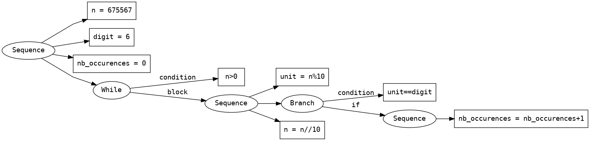
Deep
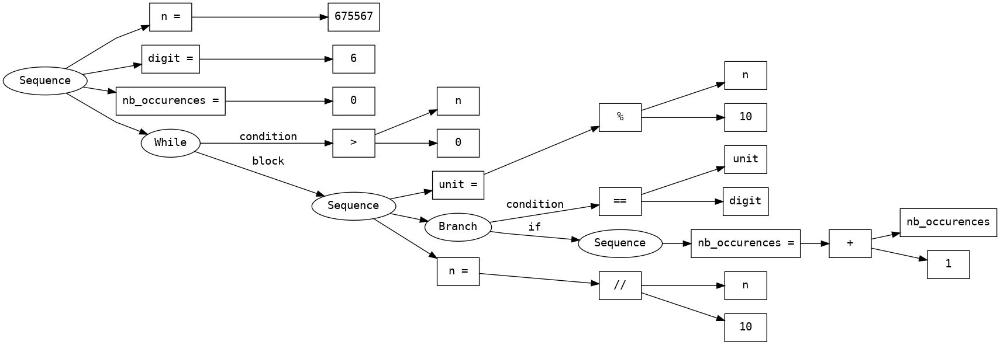examples/factorial.py
Code
1 n = 5
2 fact = 1
3 i = 1
4
5 while i<=n:
6 fact = fact*i
7 i = i+1
Environment
n (const int)
fact (var int)
i (var int)
AST
Simple
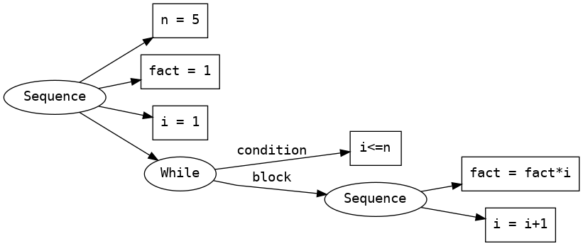
Deep
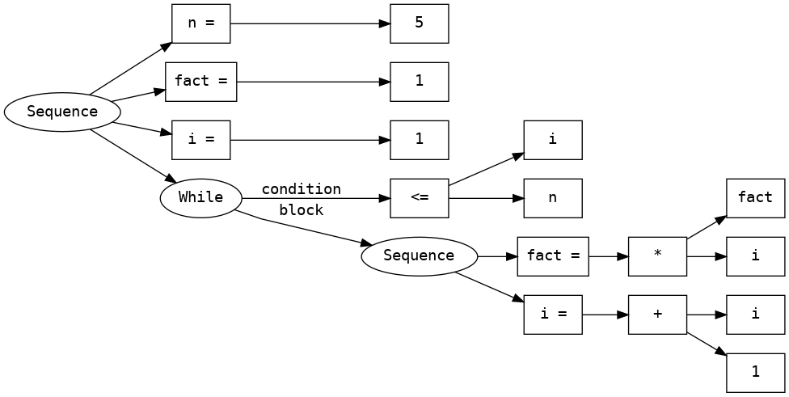examples/gcd.py
Code
1 a = 9
2 b = 15
3 while b!=0:
4 tmp = b
5 b = a%b
6 a = tmp
7 gcd = a
Environment
a (var int)
b (var int)
tmp (var int)
gcd (var int)
AST
Simple
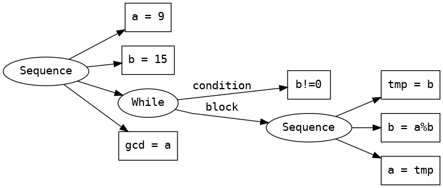
Deep
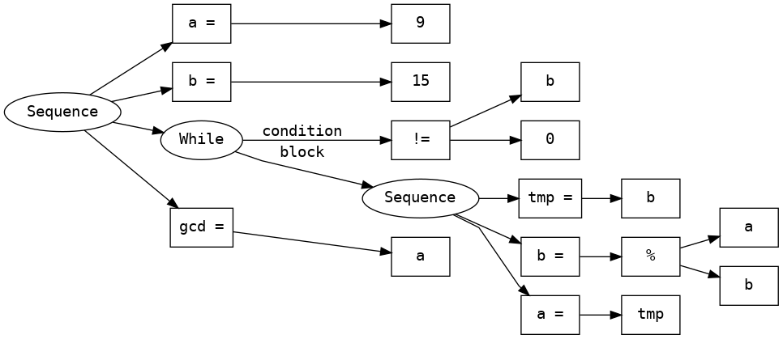examples/if_elif_else.py
Code
1 x = 3
2 if x>0:
3 x = x-4
4 elif x<0:
5 x = x+5
6 else:
7 x = x+10
Environment
x (var int)
AST
Simple
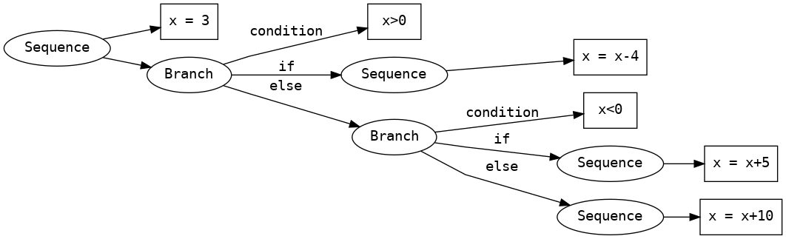
Deep
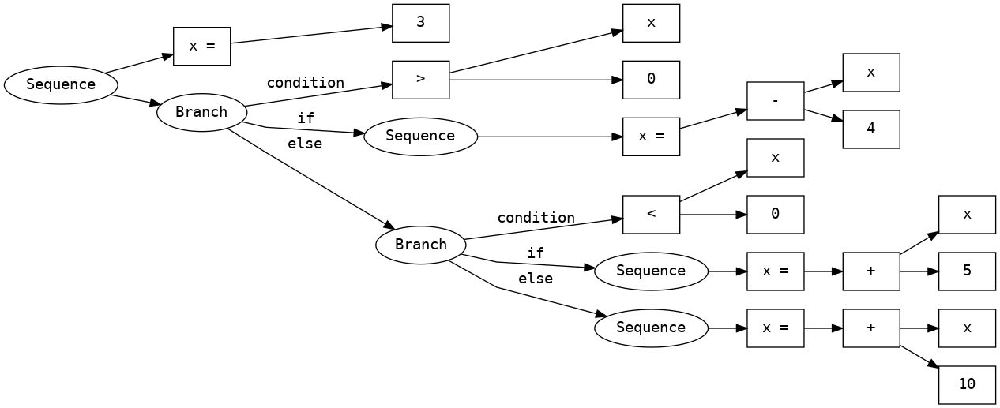examples/prime.py
Code
1 n = 167
2 d = 2
3 is_prime = True
4 while d*d<=n and is_prime:
5 if n%d==0:
6 is_prime = False
7 d = d+1
Environment
n (const int)
d (var int)
is_prime (var bool)
AST
Simple
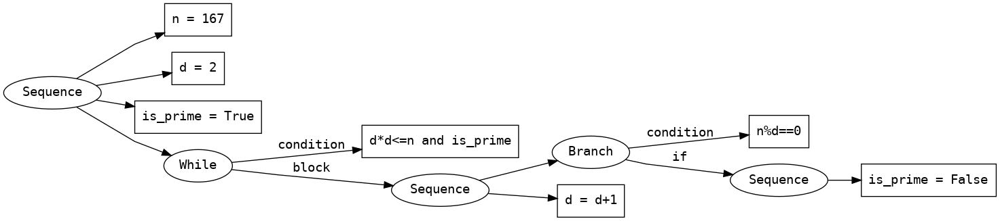
Deep
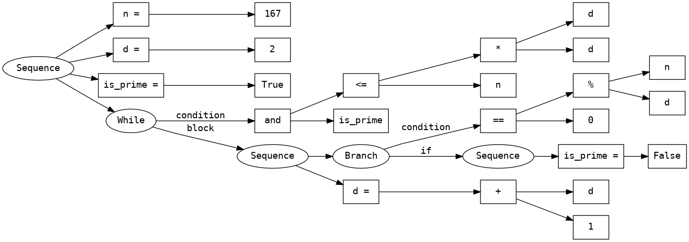examples/propagation_and.py
Code
1 a = True
2 b = True
3 c = False
4
5 while a:
6 a = a and b
7 b = b and c
Environment
a (var bool)
b (var bool)
c (const bool)
AST
Simple

Deep
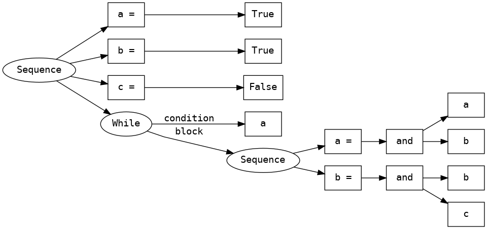examples/propagation_or.py
Code
1 x = False
2 y = False
3 z = True
4
5 while not x:
6 x = x or y
7 y = y or z
Environment
x (var bool)
y (var bool)
z (const bool)
AST
Simple

Deep
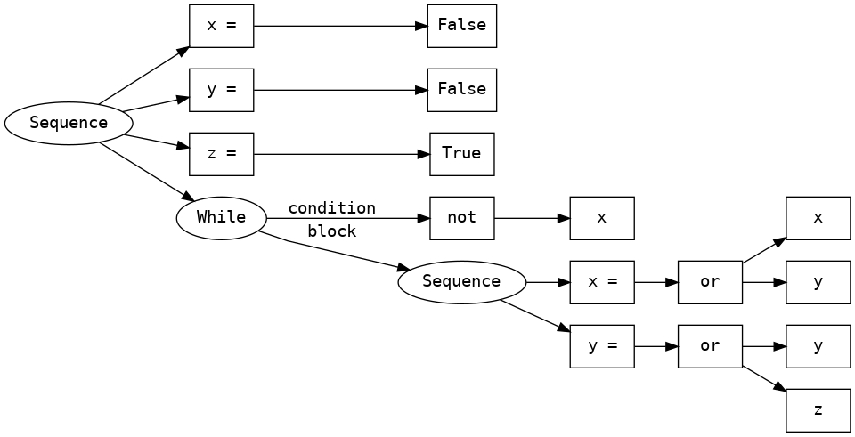examples/sum_1_n.py
Code
1 n = 10
2 sum = 0
3 i = 0
4 while i<=n:
5 sum = sum+i
6 i = i+1
Environment
n (const int)
sum (var int)
i (var int)
AST
Simple

Deep
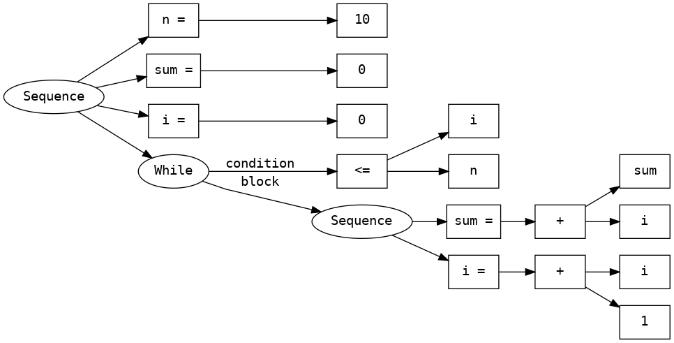examples/sum_divisers.py
Code
1 n = 67
2 div = 2
3 sum = 0
4 while div<n:
5 if n%div==0:
6 sum = sum+div
7 div = div+1
Environment
n (const int)
div (var int)
sum (var int)
AST
Simple
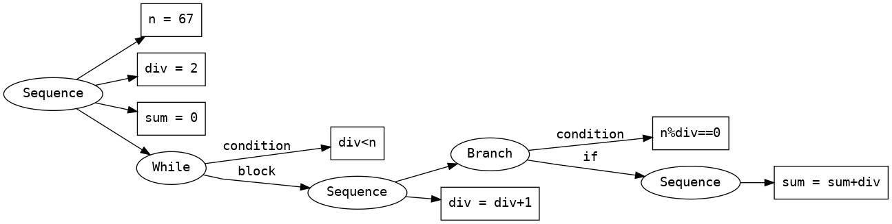
Deep
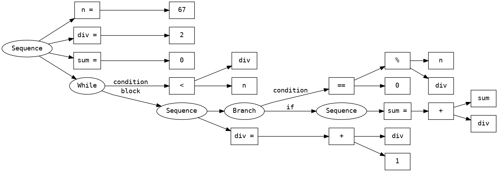examples/sum_interval.py
Code
1 a = 134
2 b = 178
3 s = 0
4 i = a
5 while i<=b:
6 s = s+i
7 i = i+1
8
9 test = s==((a+b)*(b-a+1))//2
Environment
a (const int)
b (const int)
s (var int)
i (var int)
test (var bool)
AST
Simple
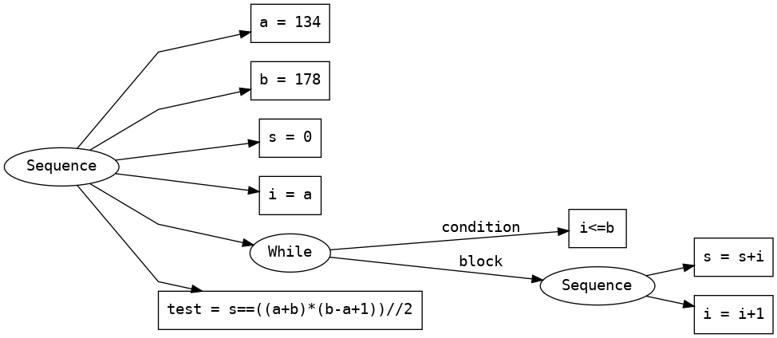
Deep
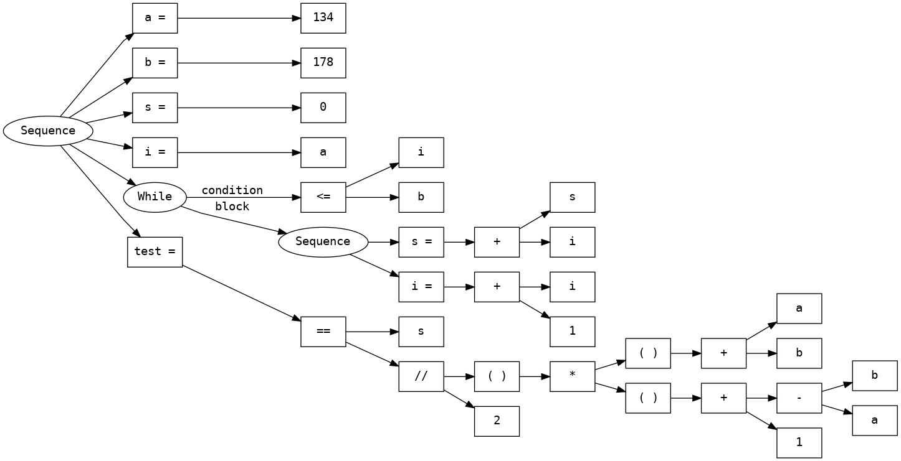examples/syracuse.py
Code
1 x = 9
2
3 flight = 0
4 while x!=1:
5
6 if x%2==0:
7 x = x//2
8 else:
9 x = 3*x+1
10 flight = flight+1
Environment
x (var int)
flight (var int)
AST
Simple
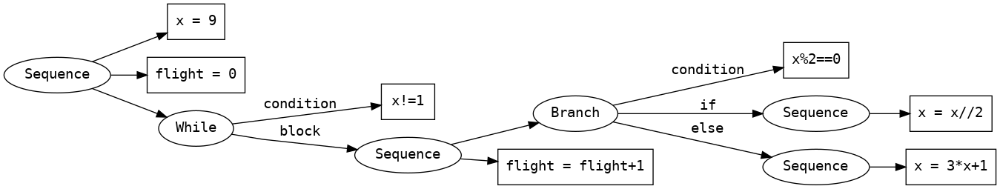
Deep
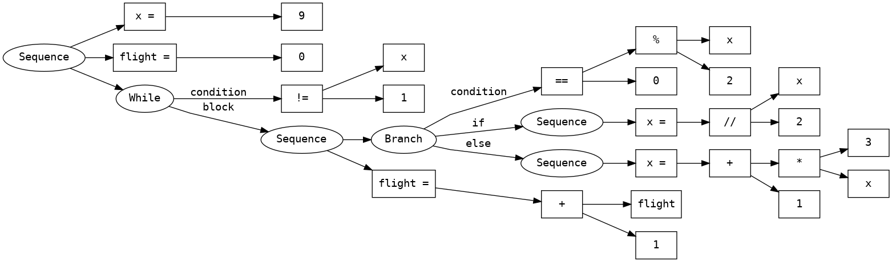examples/triangle_i_j.py
Code
1 m = 5
2 n = 4
3
4 i = 0
5 while i<m:
6 j = i
7 while j<n:
8 j = j+1
9 i = i+1
Environment
m (const int)
n (const int)
i (var int)
j (var int)
AST
Simple
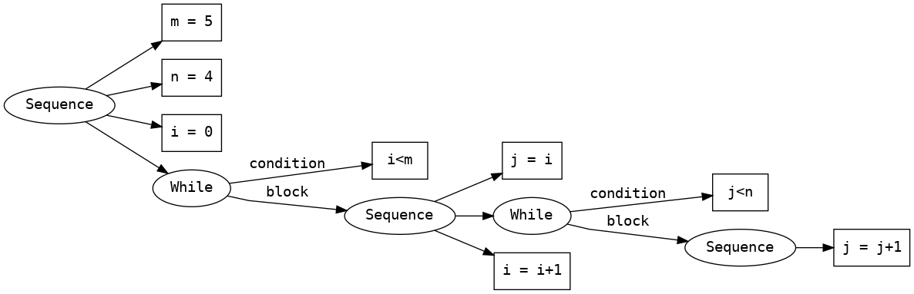
Deep
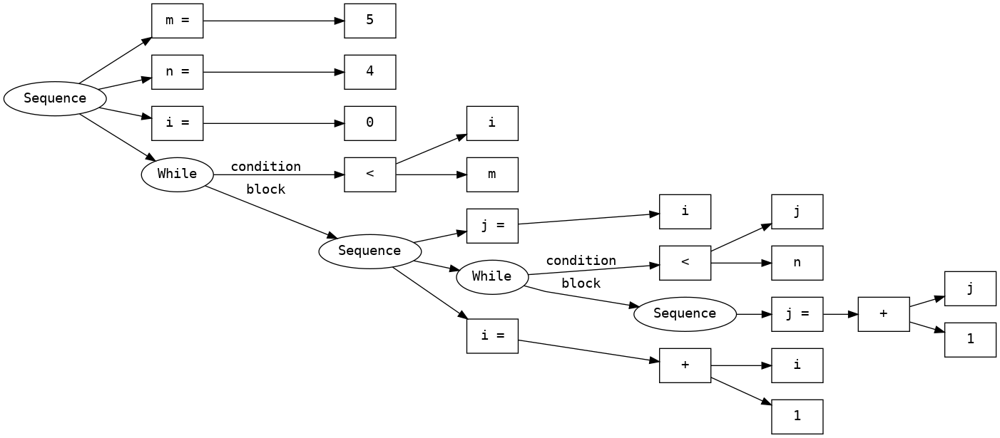examples/whiles.py
Code
1 x = 19
2
3 while x>2:
4 while x%2==0:
5 x = x//2
6 x = x+1
Environment
x (var int)
AST
Simple
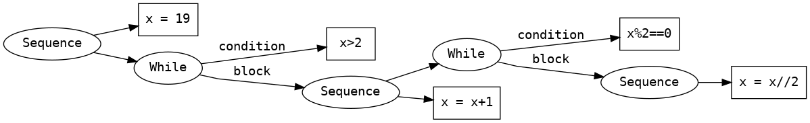
Deep
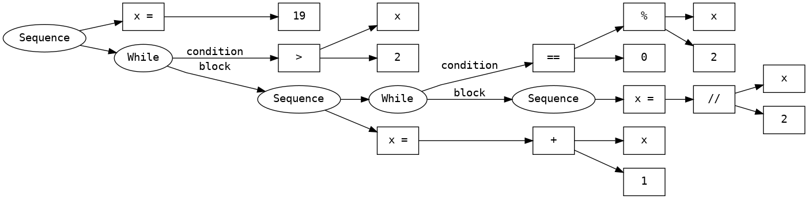